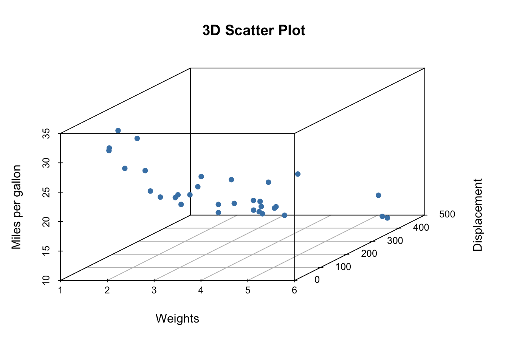
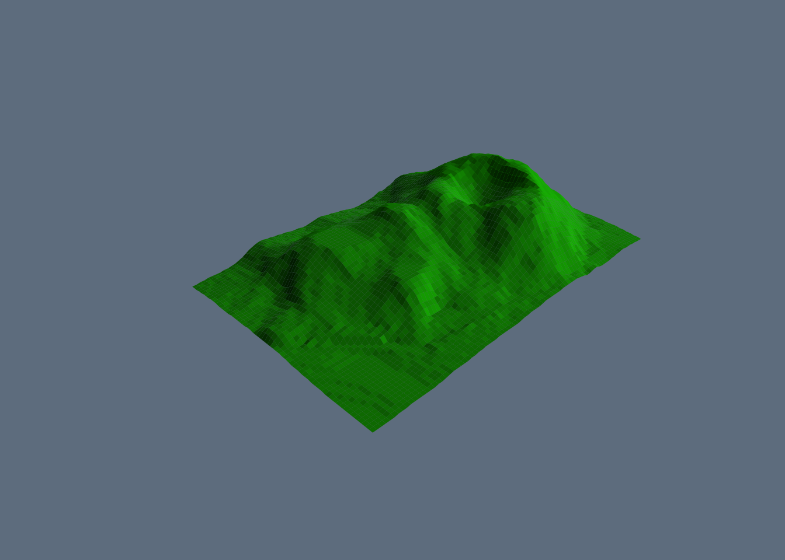

2 + 3 / (5 * 4) ^ 2[1] 2.00755 == 5.00[1] TRUE# 5 and 5L are of the same value too
# 5 is of type double; 5L is integer
5 == 5L[1] TRUEtypeof(5L)[1] "integer"!TRUE == FALSE[1] TRUE2 + 3 / (5 * 4) ^ 2[1] 2.00755 == 5.00[1] TRUE# 5 and 5L are of the same value too
# 5 is of type double; 5L is integer
5 == 5L[1] TRUEtypeof(5L)[1] "integer"!TRUE == FALSE[1] TRUEType coercion: When doing AND/OR comparisons, all nonzero values are treated as TRUE and 0 as FALSE.
-5 | 0[1] TRUE1 & 1[1] TRUE2 | 0[1] TRUEMath functions in R are built-in.
sqrt(144)[1] 12exp(1)[1] 2.718282sin(pi/2)[1] 1log(32, base = 2)[1] 5abs(-7)[1] 7Use <- to do assignment. Why
## we create an object, value 5,
## and call it x, which is a variable
x <- 5
x[1] 5(x <- x + 6)[1] 11x == 5[1] FALSElog(x)[1] 2.397895character, double, integer and logical.
typeof(5)[1] "double"typeof(5L)[1] "integer"typeof("I_love_data_science!")[1] "character"typeof(1 > 3)[1] "logical"is.double(5L)[1] FALSE

To create a vector, use c(), short for concatenate or combine.
All elements of a vector must be of the same type.
(dbl_vec <- c(1, 2.5, 4.5)) [1] 1.0 2.5 4.5(int_vec <- c(1L, 6L, 10L))[1] 1 6 10## TRUE and FALSE can be written as T and F
(log_vec <- c(TRUE, FALSE, F)) [1] TRUE FALSE FALSE(chr_vec <- c("pretty", "girl"))[1] "pretty" "girl" ## check how many elements in a vector
length(dbl_vec) [1] 3## check a compact description of
## any R data structure
str(dbl_vec) num [1:3] 1 2.5 4.5Use : to create a sequence of integers.
Use seq() to create a sequence of numbers of type double with more options.
(vec <- 1:5) [1] 1 2 3 4 5typeof(vec)[1] "integer"# a sequence of numbers from 1 to 10 with increment 2
(seq_vec <- seq(from = 1, to = 10, by = 2))[1] 1 3 5 7 9typeof(seq_vec)[1] "double"# a sequence of numbers from 1 to 10
# with 12 elements
seq(from = 1, to = 10, length.out = 12) [1] 1.000000 1.818182 2.636364 3.454545 4.272727 5.090909 5.909091
[8] 6.727273 7.545455 8.363636 9.181818 10.000000# Create two vectors
v1 <- c(3, 8)
v2 <- c(4, 100)
## All operations happen element-wisely
# Vector addition
v1 + v2[1] 7 108# Vector subtraction
v1 - v2[1] -1 -92# Vector multiplication
v1 * v2[1] 12 800# Vector division
v1 / v2[1] 0.75 0.08sqrt(v2)[1] 2 10v1 <- c(3, 8, 4, 5)
# The following 2 operations are the same
v1 * 2[1] 6 16 8 10v1 * c(2, 2, 2, 2)[1] 6 16 8 10v3 <- c(4, 11)
v1 + v3 ## v3 becomes c(4, 11, 4, 11) when doing the operation[1] 7 19 8 16To extract element(s) in a vector, we use a pair of brackets [] with element indexing.
The indexing starts with 1.
v1[1] 3 8 4 5v2[1] 4 100## The 3rd element
v1[3] [1] 4v1[c(1, 3)][1] 3 4v1[1:2][1] 3 8## extract all except a few elements
## put a negative sign before the vector of
## indices
v1[-c(2, 3)] [1] 3 5A vector of type factor can be ordered in a meaningful way.
Create a factor by factor(). It is a type of integer, not character. 😲 🙄
## Create a factor from a character vector using function factor()
(fac <- factor(c("med", "high", "low")))[1] med high low
Levels: high low medtypeof(fac) ## The type is integer.[1] "integer"str(fac) ## The integers show the level each element in vector fac belongs to. Factor w/ 3 levels "high","low","med": 3 1 2order_fac <- factor(c("med", "high", "low"),
levels = c("low", "med", "high"))
str(order_fac) Factor w/ 3 levels "low","med","high": 2 3 1levels(fac) ## Each level represents an integer, ordered from the vector alphabetically.[1] "high" "low" "med"
Lists are different from (atomic) vectors: Elements can be of any type, including lists. (Generic vectors)
Construct a list by using list().
## a list of 3 elements of different types
x_lst <- list(idx = 1:3,
"a",
c(TRUE, FALSE))$idx
[1] 1 2 3
[[2]]
[1] "a"
[[3]]
[1] TRUE FALSEstr(x_lst)List of 3
$ idx: int [1:3] 1 2 3
$ : chr "a"
$ : logi [1:2] TRUE FALSEnames(x_lst)[1] "idx" "" "" length(x_lst)[1] 3
Return an element of a list
## subset by name (a vector)
x_lst$idx [1] 1 2 3## subset by indexing (a vector)
x_lst[[1]] [1] 1 2 3typeof(x_lst$idx)[1] "integer"
Return a sub-list of a list
## subset by name (still a list)
x_lst["idx"] $idx
[1] 1 2 3## subset by indexing (still a list)
x_lst[1] $idx
[1] 1 2 3typeof(x_lst["idx"])[1] "list"
If list
xis a train carrying objects, thenx[[5]]is the object in car 5;x[4:6]is a train of cars 4-6.— @RLangTip, https://twitter.com/RLangTip/status/268375867468681216


A matrix is a two-dimensional analog of a vector with attribute dim.
Use command matrix() to create a matrix.
## Create a 3 by 2 matrix called mat
(mat <- matrix(data = 1:6, nrow = 3, ncol = 2)) [,1] [,2]
[1,] 1 4
[2,] 2 5
[3,] 3 6dim(mat); nrow(mat); ncol(mat)[1] 3 2[1] 3[1] 2# elements are arranged by row
matrix(data = 1:6,
nrow = 3,
ncol = 2,
byrow = TRUE) #<< [,1] [,2]
[1,] 1 2
[2,] 3 4
[3,] 5 6attributes(mat)$dim
[1] 3 2mat [,1] [,2]
[1,] 1 4
[2,] 2 5
[3,] 3 6## assign row names and column names
rownames(mat) <- c("A", "B", "C")
colnames(mat) <- c("a", "b")
mat a b
A 1 4
B 2 5
C 3 6rownames(mat)[1] "A" "B" "C"colnames(mat)[1] "a" "b"attributes(mat)$dim
[1] 3 2
$dimnames
$dimnames[[1]]
[1] "A" "B" "C"
$dimnames[[2]]
[1] "a" "b", to separate row and column index.mat[2, 2] extracts the element of the second row and second column.mat a b
A 1 4
B 2 5
C 3 6## all rows and 2nd column
## leave row index blank
## specify 2 in coln index
mat[, 2]A B C
4 5 6 ## 2nd row and all columns
mat[2, ] a b
2 5 ## The 1st and 3rd rows and the 1st column
mat[c(1, 3), 1] A C
1 3 cbind() (binding matrices by adding columns)
rbind() (binding matrices by adding rows)
When matrices are combined by columns (rows), they should have the same number of rows (columns).
mat a b
A 1 4
B 2 5
C 3 6mat_c <- matrix(data = c(7,0,0,8,2,6),
nrow = 3, ncol = 2)
## should have the same number of rows
cbind(mat, mat_c) a b
A 1 4 7 8
B 2 5 0 2
C 3 6 0 6mat_r <- matrix(data = 1:4,
nrow = 2,
ncol = 2)
## should have the same number of columns
rbind(mat, mat_r) a b
A 1 4
B 2 5
C 3 6
1 3
2 4A data frame is of type list of equal-length vectors, having a 2-dimensional structure.
More general than matrix: Different columns can have different types.
Use data.frame() that takes named vectors as input “element”.
## data frame w/ an dbl column named age
## and char column named gender.
(df <- data.frame(age = c(19, 21, 40),
gen = c("m","f", "m"))) age gen
1 19 m
2 21 f
3 40 m## a data frame has a list structure
str(df) 'data.frame': 3 obs. of 2 variables:
$ age: num 19 21 40
$ gen: chr "m" "f" "m"## must set column names
## or they are ugly and non-recognizable
data.frame(c(19,21,40), c("m","f","m")) c.19..21..40. c..m....f....m..
1 19 m
2 21 f
3 40 mData frame has properties of matrix and list.
names(df) ## df as a list[1] "age" "gen"colnames(df) ## df as a matrix[1] "age" "gen"length(df) ## df as a list[1] 2ncol(df) ## df as a matrix[1] 2dim(df) ## df as a matrix[1] 3 2## rbind() and cbind() can be used on df
df_r <- data.frame(age = 10,
gen = "f")
rbind(df, df_r) age gen
1 19 m
2 21 f
3 40 m
4 10 fdf_c <-
data.frame(col = c("red","blue","gray"))
(df_new <- cbind(df, df_c)) age gen col
1 19 m red
2 21 f blue
3 40 m grayCan use either list or matrix subsetting methods.
df_new age gen col
1 19 m red
2 21 f blue
3 40 m gray## Subset rows
df_new[c(1, 3), ] age gen col
1 19 m red
3 40 m gray## select the row where age == 21
df_new[df_new$age == 21, ] age gen col
2 21 f blue## Subset columns
## like a list
df_new$age[1] 19 21 40df_new[c("age", "gen")] age gen
1 19 m
2 21 f
3 40 m## like a matrix
df_new[, c("age", "gen")] age gen
1 19 m
2 21 f
3 40 mdf_new[c(1, 3), ] age gen col
1 19 m red
3 40 m graystr(df["age"]) ## a data frame with one column'data.frame': 3 obs. of 1 variable:
$ age: num 19 21 40str(df[, "age"]) ## becomes a vector by default num [1:3] 19 21 40mtcars[1:15, 1:4] mpg cyl disp hp
Mazda RX4 21.0 6 160.0 110
Mazda RX4 Wag 21.0 6 160.0 110
Datsun 710 22.8 4 108.0 93
Hornet 4 Drive 21.4 6 258.0 110
Hornet Sportabout 18.7 8 360.0 175
Valiant 18.1 6 225.0 105
Duster 360 14.3 8 360.0 245
Merc 240D 24.4 4 146.7 62
Merc 230 22.8 4 140.8 95
Merc 280 19.2 6 167.6 123
Merc 280C 17.8 6 167.6 123
Merc 450SE 16.4 8 275.8 180
Merc 450SL 17.3 8 275.8 180
Merc 450SLC 15.2 8 275.8 180
Cadillac Fleetwood 10.4 8 472.0 205plot(x = mtcars$mpg, y = mtcars$hp,
xlab = "Miles per gallon",
ylab = "Horsepower",
main = "Scatter plot",
col = "red",
pch = 5, las = 1)
plot(x = 1:25, y = rep(1, 25), pch = 1:25, xlab = "", ylab = "", main = "pch", axes = FALSE)
axis(1, at = 1:25, cex.axis = 0.5)
par(mfrow = c(1, 2))
plot(x = mtcars$mpg, y = mtcars$hp, xlab = "mpg")
plot(x = mtcars$mpg, y = mtcars$weight, xlab = "mpg")
par(mar = c(4, 4, 0, 0))
boxplot(mpg ~ cyl,
data = mtcars,
col = c("blue", "green", "red"),
las = 1,
horizontal = TRUE,
xlab = "Miles per gallon",
ylab = "Number of cylinders")
hist() decides the class intervals/with based on breaks. If not provided, R chooses one.
hist(mtcars$wt,
breaks = 20,
col = "#003366",
border = "#FFCC00",
xlab = "weights",
main = "Histogram of weights",
las = 1)
(counts <- table(mtcars$gear))
3 4 5
15 12 5 my_bar <- barplot(counts,
main = "Car Distribution",
xlab = "Number of Gears",
las = 1)
text(x = my_bar, y = counts - 0.8,
labels = counts,
cex = 0.8)
Pie charts are used for categorical variables, especially when we want to know percentage of each category.
The first argument is the frequency table, and you can add labels to each category.
(percent <- round(counts / sum(counts) * 100, 2))
3 4 5
46.88 37.50 15.62 (labels <- paste0(3:5, " gears: ", percent, "%"))[1] "3 gears: 46.88%" "4 gears: 37.5%" "5 gears: 15.62%"pie(x = counts, labels = labels,
main = "Pie Chart",
col = 2:4,
radius = 1)
image() function displays the values in a matrix using color.matrix(1:30, 6, 5) [,1] [,2] [,3] [,4] [,5]
[1,] 1 7 13 19 25
[2,] 2 8 14 20 26
[3,] 3 9 15 21 27
[4,] 4 10 16 22 28
[5,] 5 11 17 23 29
[6,] 6 12 18 24 30image(matrix(1:30, 6, 5))
library(fields)Loading required package: spamSpam version 2.11-1 (2025-01-20) is loaded.
Type 'help( Spam)' or 'demo( spam)' for a short introduction
and overview of this package.
Help for individual functions is also obtained by adding the
suffix '.spam' to the function name, e.g. 'help( chol.spam)'.
Attaching package: 'spam'The following objects are masked from 'package:base':
backsolve, forwardsolveLoading required package: viridisLite
Try help(fields) to get started.str(volcano) num [1:87, 1:61] 100 101 102 103 104 105 105 106 107 108 ...image.plot(volcano)
x <- 10*(1:nrow(volcano))
y <- 10*(1:ncol(volcano))
image(x, y, volcano, col = hcl.colors(100, "terrain"), axes = FALSE)
contour(x, y, volcano, levels = seq(90, 200, by = 5),
add = TRUE, col = "brown")
axis(1, at = seq(100, 800, by = 100))
axis(2, at = seq(100, 600, by = 100))
box()
title(main = "Maunga Whau Volcano", font.main = 4)
library(scatterplot3d)
scatterplot3d(x = mtcars$wt, y = mtcars$disp, z = mtcars$mpg,
xlab = "Weights", ylab = "Displacement", zlab = "Miles per gallon",
main = "3D Scatter Plot",
pch = 16, color = "steelblue")
# Exaggerate the relief
z <- 2 * volcano
# 10 meter spacing (S to N)
x <- 10 * (1:nrow(z))
# 10 meter spacing (E to W)
y <- 10 * (1:ncol(z))
par(bg = "slategray")
persp(x, y, z, theta = 135, phi = 30, col = "green3", scale = FALSE,
ltheta = -120, shade = 0.75, border = NA, box = FALSE)
NA means Not Available, which is a logical constant of length 1 for a missing value indicator.
Each type of vector has its own missing value. They all are reserved words.
You can always use NA and it will be converted to the correct type.
NA # logical[1] NANA_integer_ # integer[1] NANA_real_ # double[1] NANA_character_ # character[1] NA## The NA in the vector x is NA_real_
x <- c(NA, 0, 1)
typeof(x) [1] "double"is.na(x)[1] TRUE FALSE FALSENULL represents the null object, an object representing nothing.NULL is a reserved word and can also be the product of importing data with unknown data type.NULL typically behaves like a vector of length 0.y <- c(NA, NULL, "")
y[1] NA ""## only first element is evaluated...
is.null(y) [1] FALSE## a missing value is a value we don't know.
## It is something.
is.null(NA)[1] FALSEis.null(NULL)[1] TRUE# empty character is something, not nothing!
is.null("")[1] FALSEIntegers have one special value: NA, while doubles have four: NA, NaN, Inf and -Inf.
NaN means Not a Number.
All three special values NaN, Inf and -Inf can arise during division.
c(-1, 0, 1) / 0[1] -Inf NaN Inf==. Use functions is.finite(), is.infinite(), and is.nan().is.finite(0)[1] TRUEis.nan(0/0)[1] TRUEis.infinite(7.8/1e-307)[1] FALSEis.infinite(7.8/1e-308)[1] TRUENaN is a missing value too.
There should be something there, but it’s Not Available to us because of invalid operation.
| 0 | Inf | NA | NaN | |
|---|---|---|---|---|
is.finite() |
v | |||
is.infinite() |
v | |||
is.na() |
v | v | ||
is.nan() |
v |
class(NULL); class(NA); class(NaN)[1] "NULL"[1] "logical"[1] "numeric"NULL > 5; NA > 5; NaN > 5logical(0)[1] NA[1] NAlength(NULL); length(NA); length(NaN)[1] 0[1] 1[1] 1(vx <- c(3, NULL, 5)); (vy <- c(3, NA, 5)); (vz <- c(3, NaN, 5))[1] 3 5[1] 3 NA 5[1] 3 NaN 5sum(vx) # NULL isn't a problem cuz it doesn't exist[1] 8sum(vy)[1] NAsum(vy, na.rm = TRUE)[1] 8sum(vz)[1] NaNsum(vz, na.rm = TRUE)[1] 8# The condition must evaluate to either TRUE or FALSE.
if (condition) {
# code executed when condition is TRUE
} else {
# code executed when condition is FALSE
}if (c(TRUE, FALSE)) {}
#> Warning in if (c(TRUE, FALSE)) {: the condition has length > 1 and only the
#> first element will be used
#> NULL
if (NA) {}
#> Error in if (NA) {: missing value where TRUE/FALSE needed|| (or) and && (and) to combine multiple logical expressions.if (cond1 || cond2) {
# code executed when condition is TRUE
}The basic If-else statement structure is that we write if then put a condition inside a pair of parenthesis, then use curly braces to wrap the code to be run when the condition is TRUE.
If we want to have the code to be run when the condition is FALSE, we add else and another pair of curly braces.
curly braces is not necessary if you just have one line of code to be run.
The condition must evaluate to either one TRUE or one FALSE.
If it’s a vector, you’ll get a warning message, and only the first element will be used.
If it’s an NA, you’ll get an error.
if (this) {
# do that
} else if (that) {
# do something else
} else {
#
}if (celsius <= 0) {
"freezing"
} else if (celsius <= 10) {
"cold"
} else if (celsius <= 20) {
"cool"
} else if (celsius <= 30) {
"warm"
} else {
"hot"
}If we want to have multiple conditions, we add the word else if.
The code below is an example of converting numerical data to categorical data, freezing, cold, warm and hot.
It’s not the best way to do conversion.


Write a function whenever you’ve copied and pasted your code more than twice.
Three key steps/components:
function_name <- function(arg1, arg2, ...) {
## body
return(something)
}add_number <- function(a, b) {
c <- a + b
return(c)
}
n1 <- 9
n2 <- 18
add_number(n1, n2)[1] 27## Syntax
for (value in that) {
this
}for (i in 1:5) {
print(i)
}[1] 1
[1] 2
[1] 3
[1] 4
[1] 5for (x in c("My", "1st", "for", "loop")) {
print(x)
}[1] "My"
[1] "1st"
[1] "for"
[1] "loop"while (condition) {
# body
}for loop as a while loop, but you can’t rewrite every while loop as a for loop.for (i in seq_along(x)) {
# body
}
# Equivalent to
i <- 1
while (i <= length(x)) {
# body
i <- i + 1
}## a function that sample one from "T" or "H"
flip <- function() sample(c("T", "H"), 1)
flips <- 0; nheads <- 0
while (nheads < 5) {
if (flip() == "H") {
nheads <- nheads + 1
} else {
nheads <- 0
}
flips <- flips + 1
}
flips[1] 92